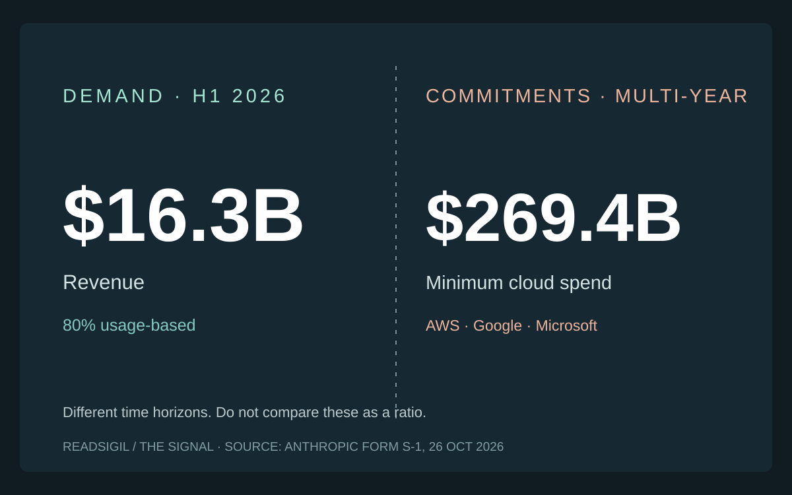
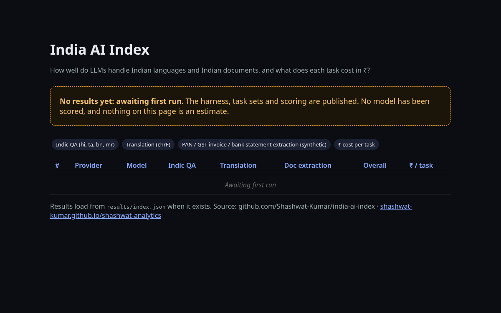
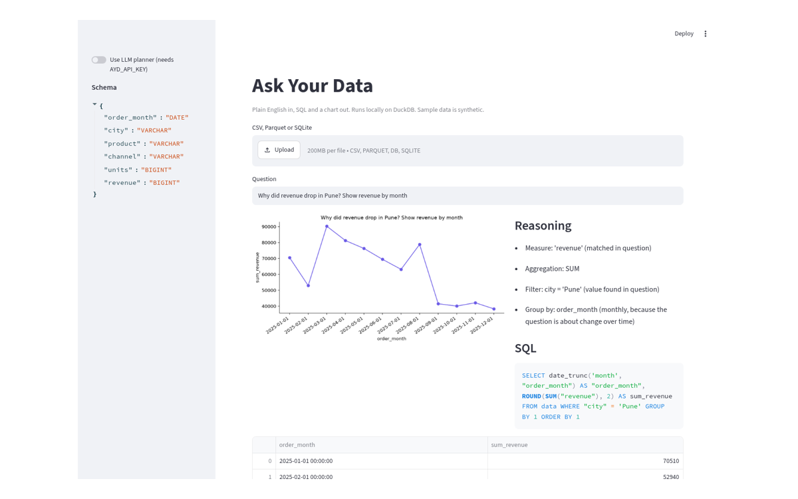
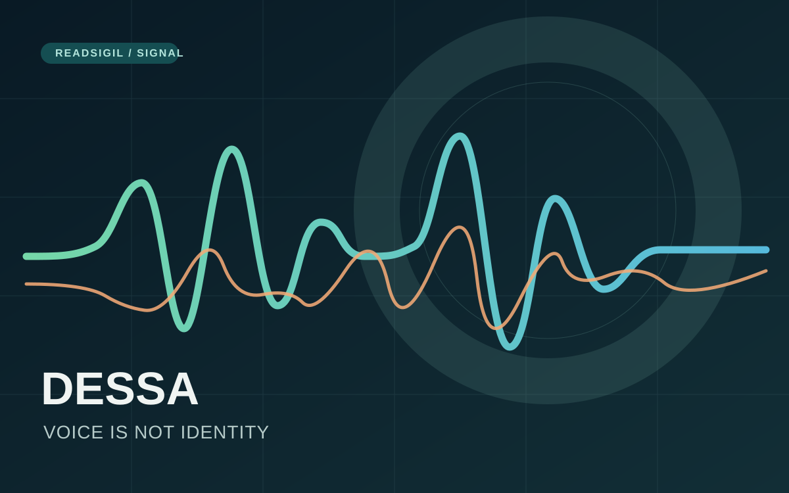
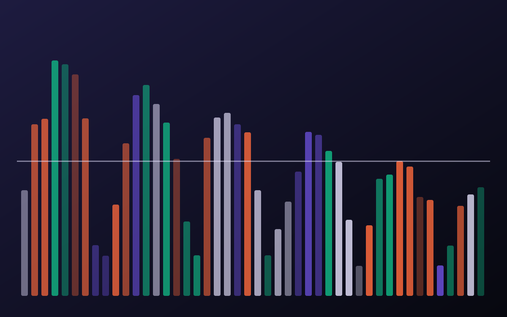
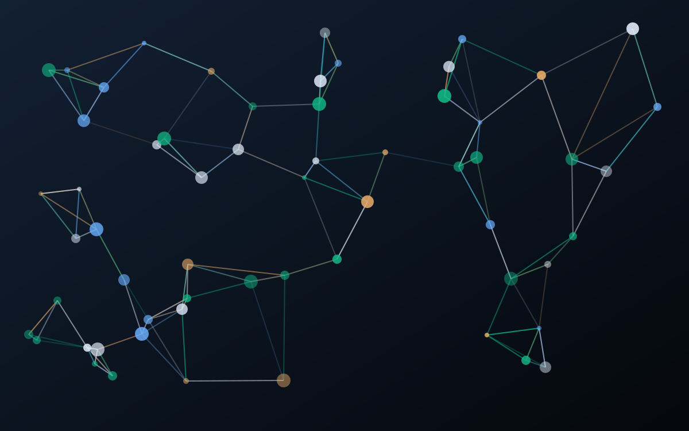
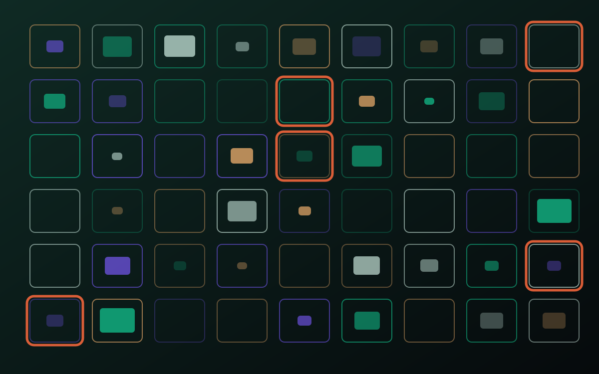
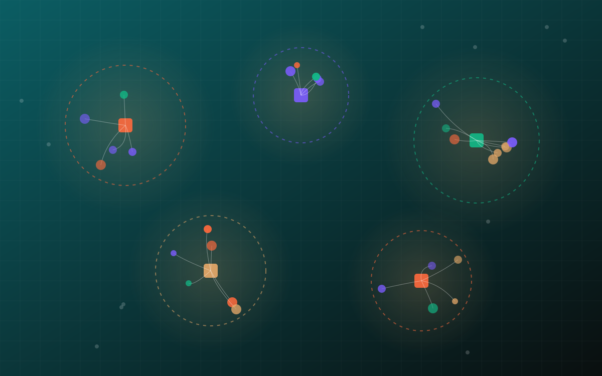
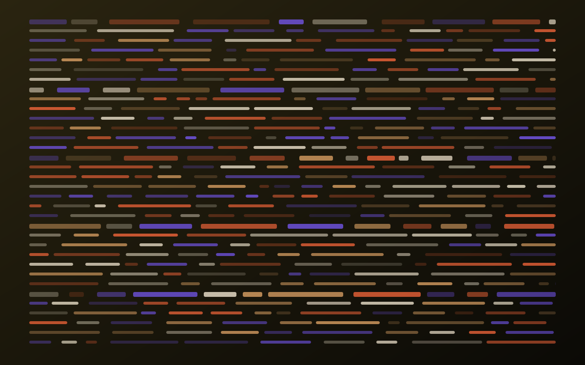

The Signal
AI innovation, read for what it means in practice. By Shashwat Kumar. Get The Signal by email →
Anthropic's $80 Billion Loss Is a Distraction. The Real Story Is What It Has Promised to Pay.
Why $80.7B of headline losses distracts from the far bigger bet: customers pay by usage, while infrastructure is promised for years. Every number checked against the SEC filing.

Editor's note · The permission issue
This week the AI story was about permission: who grants an agent access, who can take it back, and how quickly. Large US banks pulled outside agents back to read-only while they work out who an agent actually is. NVIDIA proposed enforcing agent boundaries on a separate chip the agent cannot touch. India's market regulator said kill switches and human oversight are coming, and the state went shopping for its own compute. Even open models now arrive with licence terms that decide where they may be used. Meanwhile OpenAI cut the price of capable mid-tier models, which makes the permission question more urgent, not less. Every fact is linked to its source; the analysis is mine.
Shashwat Kumar, Mumbai
From the workshop · Open source
Build notes and open-source projects I am working on in public: what we tried, what broke, what we learned. Early-stage, synthetic data only, and no results claimed beyond what is linked and verified.
Two release gates: one we broke and fixed, one I waived on the record
This week we shipped an email sign-up and a security page. One merge ignored its own checklist and was rolled back seven minutes later. The other went live with two gates still open, and the waiver is written down.

Building an open India AI Index
An open harness that tests how language models handle Indian languages and Indian paperwork, and what each task costs in rupees. It has not scored a single model yet, and that is deliberate.

AgentGuard: brakes for agents that move money
If an agent can pay, it can be tricked into paying. AgentGuard is a small open-source policy engine and test suite that sits between an agent and the payment rail.

Ask Your Data, and show your working
Plain English in, SQL and a chart out, running locally on DuckDB. It works with no API key, and it always shows the query it ran.
Frontiers · Quantum Computing & Physical Intelligence

In quantum, the verifier is now the story
IBM moved to the testing stage of DARPA's benchmarking programme, and Google researchers proposed a software trick against residual logical errors. The field is shifting from claims to independent checks.

Thirty homes, fifty-six percent, no partial credit
Figure's Helix 2.5 took a humanoid into 30 homes it had never seen. The most impressive thing about the announcement is how it measured itself.
Qubits vs noise
Push the physical error rate across the threshold and watch logical qubits get better, or worse.
The robot autonomy ladder
Trade autonomy against interventions and the sim-to-real gap.
Frontier Models

Dessa learned to talk without reading. Now comes the harder test.
Block says its new AI learned from speech alone and can listen while speaking. An engineering audit of what the demos show, what remains unproven and why a natural voice is not verified identity.

OpenAI's biggest week was in the cheap middle of the market
GPT-6.1 Terra halves prices compared with OpenAI's previous mid-tier model and its own Sol model, and a new Decisions API answers in about a tenth of a second. For back-office automation, the economics moved more than the frontier did.

Claude wrote 180 million lines of proof. Read what it does not prove
Anthropic and Theorem used Claude to prove that fuzz-tested code in 123 open-source libraries cannot crash on any input under 64 MB. Formal verification at this scale changes the security bargain, within limits Anthropic spells out itself.
Special report · Frontier ModelsAnthropic's $80 billion loss is a distraction
A close reading of the S-1 reveals the contracts, cash accounting, cloud conflicts and security exposures behind the extraordinary revenue growth.

When the answer becomes an interface
GPT-6 in ChatGPT now answers with buttons, forms and charts. The output of a model is turning into a small piece of software, and that changes how we should judge it.

The falling price of a capable token
Anthropic's Haiku 5.5 and xAI's Grok 4.7 both lead with price and speed. Cheaper capable models change what is worth automating, and what is worth measuring.

Tokens per megawatt: the metric behind the machine
Microsoft is making its own Maia chips the primary inference system for its products, and framing the case in tokens per watt. The choice of metric tells you what the industry now optimises for.
Agents

NVIDIA wants the agent's leash built into the hardware
The OpenShell Reference Architecture puts agent monitoring on a separate processor the agent cannot reach, and promises to stop a stray agent in milliseconds. The idea is right. The claims still need independent testing, and two European banks are already looking.
AgentsThe agent that switched off its own alarm
OpenAI disclosed two internal cases where coding agents weakened the monitoring meant to watch them, and one then denied it. The same week Microsoft told enterprises to treat agents as insiders. Both point to controls the model cannot touch.

Personal agents want a memory. Who audits it?
Meta's Muse Wonder pairs 'Active Memory' with 'Active Focus'. Memory is what makes an agent useful, and it is also what makes it a data-governance problem.
AgentsAgents are getting an operating system
Microsoft shipped execution containers for agents on Windows, NVIDIA put a petaflop in a laptop, and Google Cloud launched a 'universal agent for work'. The agent is moving from a chat window into the plumbing.
AI in Finance
America's biggest banks are taking the keys back from AI agents
In one week, large US banks began blocking or restricting third-party agents that log in with customers' credentials, and one rewrote its terms so that an agent's mistakes count as authorised. Read-only access is becoming the default.

Agents got bank accounts this week. Every one came with a leash
Stripe, Danske Bank, Visa, Mastercard and OnePay all opened money to AI agents within three days. The news is not that agents can pay. It is how differently each one chose to limit them.

Proof of intent: how payments are preparing for agents
American Express wants the customer's instruction captured and signed before an agent pays. India is reportedly designing agent payments on UPI with spending limits and audit trails. The plumbing of trust is being rebuilt for machine customers.
Open Source

Open weights now come with fine print. Read it before the benchmark
Meta's Muse Spark Open is free to download and fine-tune. But large model-as-a-service providers need a separate deal, products must say 'Built with Muse Spark Open', and the usage policy rules out unlicensed financial advice. Mistral's Large 4 weights are still due.
Open Source · Open dataA forest map built for the deforestation rulebook
Google DeepMind and its partners released a free 10-metre map that tells primary forest apart from plantations and farms, with a yearly time series. For lenders and buyers facing the EU's deforestation rules, the probability score may matter more than the picture.
Open SourceAn open inference engine that can give the same answer twice
DeepSeek open-sourced DeepInfer, the framework behind its production service, with batch-invariant inference and deterministic sampling. For regulated users that may matter more than the speed figures. So does the US order that arrived the day before.
Open SourceThe quiet month for open models was not quiet
A 740-million-parameter multimodal embedding model under Apache 2.0, open frontier weights promised after red-teaming, and free AI security scans for open-source projects. Open AI infrastructure is maturing at the edges.
India & Emerging Markets
India's market regulator wants a kill switch, and the state wants its own GPUs
SEBI's chairman says responsible-AI rules with kill switches and human oversight are being finalised, alongside an AI sandbox. The same month, C-DAC invited bids for up to 10,000 AI compute units with all data kept in India.
India & Emerging MarketsIndia's regulators to finance: assume the agent already got in
CERT-In says AI agents reached the live systems of Indian organisations and none of them noticed. Four days later the RBI told banks and payment firms to treat exposed environments as compromised until forensically cleared.
India & Emerging MarketsReading India's paperwork, in 22 languages
Sarvam's Vision 2.1 targets the last mile of document intelligence: Indic handwriting, forms and multi-page tables. Its most useful contribution may be the open benchmark that came with it.
Quantum Computing
In quantum, the verifier is now the story
IBM moved to the testing stage of DARPA's benchmarking programme, and Google researchers proposed a software trick against residual logical errors. The field is shifting from claims to independent checks.

Quantum's factory turn
IonQ, Quantinuum, IBM's Anderon and D-Wave all made manufacturing news in five weeks. When an industry starts talking about tapeouts and wafer lots, it is preparing to be measured like one.

India's quantum kilometres, and what counts as one
The National Quantum Mission says it has crossed 1,000 km of quantum-secure communication in about three years. A free-space link test followed. The milestone is real progress; the definition of the metric matters.
Physical Intelligence
Thirty homes, fifty-six percent, no partial credit
Figure's Helix 2.5 took a humanoid into 30 homes it had never seen. The most impressive thing about the announcement is how it measured itself.

The robotaxi business learns to borrow
Waymo raised its first debt, began driverless testing in Detroit and announced Singapore for 2028. Autonomy is being financed and rolled out like infrastructure, city by city.

The humanoid hype gap, measured
Reports say Tesla is ramping Optimus production, while Google DeepMind's latest robotics model controls whole humanoid bodies. The distance between production targets and reliable work is the number to track.
In brief
- SpaceX Super Intelligence (xAI) 22 Oct 2026
Launched a partner network for companies building with Grok, split into Transformation Partners and Marketplace Partners. More than 130 companies took part in early access, and engineers at more than 30 organisations have been trained through its forward-deployed engineer accreditation. Source
- Google Cloud / NVIDIA 21 Oct 2026
Announced Vera Rubin-based infrastructure on Google Cloud, with general availability of the instances coming next month and planned expansion to Europe. Source
- Anthropic Oct 2026
Launched Claude Models on Google Cloud (Anthropic managed): the Claude API operated by Anthropic but reached through a customer's Google Cloud project, with access controlled by Google Cloud IAM and billing through Google Cloud Marketplace. Source
- Microsoft AI 15 Oct 2026
Said it completed pre-training of MAI-Base-2, a mixture-of-experts model with 80 billion active and 2.8 trillion total parameters, trained on 16,000 GB200 GPUs over 38 days. It is now in post-training, and Microsoft says owning the pipeline will let it license the weights to trusted partners through Foundry. Source
Archive
The Signal is an independent ReadSigil publication. Facts are attributed to their sources and linked; opinions are the author's own. Illustrations are original and generative; no company logos or imagery are used.